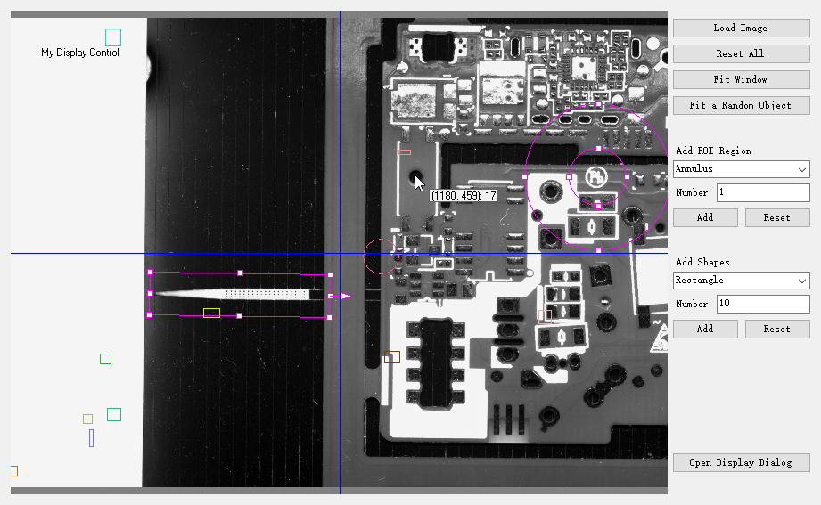
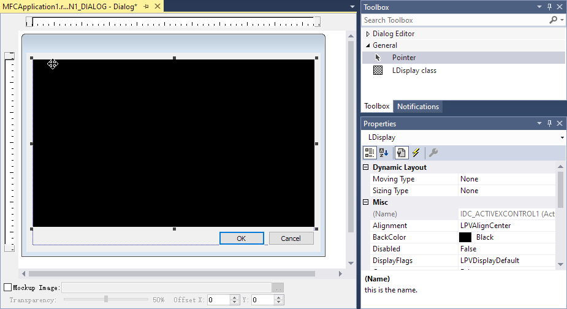

LDisplay Control is developed based on Win32 GDI interface, it's useful for display and manipulate the drawable LPW objects, such as images, regions and geometric shapes. It could be fully integrated into OEM and capital equipment machines, greatly speedup the development of the vision system.
- Show a big-size image, thousands of shapes and algorithms' results at the same time.
- Use the mouse to drag and move the scene, use the wheel to zoom in or out.
- Able to manipulate the Region object by dragging the handles.
- Fit to the current window, or a displayed object, or the specified position and size.
- Save the current image and screen-shot to file.
- Add the horizontal or vertical reference lines to the scene
- Show the position of the mouse and the corresponding pixel value
Alternatively, you can use the Draw Functions of individual LPW classes.

Add LDisplay Control to Visual Studio Projects
Module: lpvDisplay.dll
*NOTE: Please make sure your LPW libraries are registered and licensed.**
Approach 1: Use Toolbox
Step 1 - In the Resource View of your application, right-click anywhere in the Toolbox window, and then select Choose Items.

Step 2 - This dialog box shows a list of controls that can be added to the toolbox. The check box in the selected state means those items will already be present in the toolbox.
Step 3 (A) - Select the COM Components tab, check the LDispaly class from the available list, and then click OK. The selected controls will now be displayed in Visual Studio toolbox.

Step 3 (B) - Alternatively, you can also add tools by navigating to the lpvDisplay.dll location.
Step 4 - Once the controls are added, you can drag the control to the designer from the Visual Studio Toolbox and start using it. The assembly reference will automatically be added in the reference manager.

Approach 2: Use Class Wizard (MFC)
Step 1 - In the Solution Explorer of your application, right-click your project, and then select Class Wizard.

Step 2 - Select and open the Add Class From ActiveX Control Wizard.

Step 3 - Select to add class from File, then navigate to the lpvDisplay.dll location.
Step 4 - Select ILDisplay interface then click Add to generate the corresponding wrapper class.

Step 5 - Click Finish then OK. CLDisplay.h and CLDisplay.cpp file is generated and added to your project.
Step 6 - You can now use the display control in your application. See more detailed usage in demo/mfcdemo/MFCDisplay.
Alternatively, you can also use the out-of-box wrapper class under demo/mfcdemo/Wrappers, by including LPVDisplay.h and CLDisplay.cpp to your project.
Approach 3: Use #import directive (C++)
The preprocessor directive is used to incorporate information from a type library. For more detailed information, please refer to https://docs.microsoft.com/en-us/cpp/preprocessor/hash-import-directive-cpp .
Add the following lines:
#import "libid:5b289f4f-ebc9-4a41-bd94-07f4a4e4e5f6"
-or-
#import "Y:\\runner\\x86\\lpvDisplay.dll"
-or-
#import "progid:LPV.LDisplay"
Approach 4: Add Reference (C#)
You could add the LDisplay library to the C# project as all other $projectname libraries:
- RMC your C# project, click "Add Reference"
- Under COM -> Type Libraries panel, search and find LPVDisplayLib, then click OK to add reference (and Interop) to them in your project.
- In your code, add the line
using LPVDisplayLib;.
Create Display Control Programmatically
Example Code for an Application with UI
C++
class CDisplayDialog : public CDialog
{
public:
explicit CDisplayDialog(UINT nIDTemplate, CWnd* pParentWnd = NULL) :
CDialog(nIDTemplate, pParentWnd) {}
CLDisplay displayCtrl;
virtual BOOL OnInitDialog()
{
CDialog::OnInitDialog();
RECT r;
GetClientRect(&r);
displayCtrl.Create(L"Display Control",
WS_CHILD | WS_VISIBLE,
r, this, 0);
return TRUE;
}
};
void CMFCDisplayDlg::OnBnClickedBtnDisplayDlg()
{
CDisplayDialog displayDlg(IDD_DISPLAY_DLG, this);
displayDlg.DoModal();
}
C#
namespace CSharpDisplay
{
public partial class CSharpDisplay : Form
{
private void btnDisplayDlg_Click(object sender, EventArgs e)
{
Form prompt = new Form();
AxLDisplay displayCtrlInDlg = new AxLDisplay();
displayCtrlInDlg.Dock = System.Windows.Forms.DockStyle.Fill;
prompt.Controls.Add(displayCtrlInDlg);
prompt.Width = 600;
prompt.Height = 400;
prompt.Text = "Display Dialog";
prompt.ShowDialog();
}
Example Code for a Console Application
C++
ILImageArithmPtr arithm(__uuidof(LImageArithm));
ILImagePtr result_img(__uuidof(LImage));
arithm->Blend(img_list, LPVAggregation::LPVAggAvg, result_img);
ILDisplayPtr displayCtrl(__uuidof(LDisplay));
displayCtrl->SetImage(result_img);
displayCtrl->ShowDialog(L"blend avg result", 0, 0, 0, 0);
C#
LImageArithm arithm = new LImageArithm();
LImage result_img = new LImage();
LDisplay displayCtrl = new LDisplay();
displayCtrl.SetImage(result_img);
displayCtrl.ShowDialog("blend avg result");
LPVAggregation
This enumeration represents the type of an aggregation.
Definition: LPVCore.idl:512